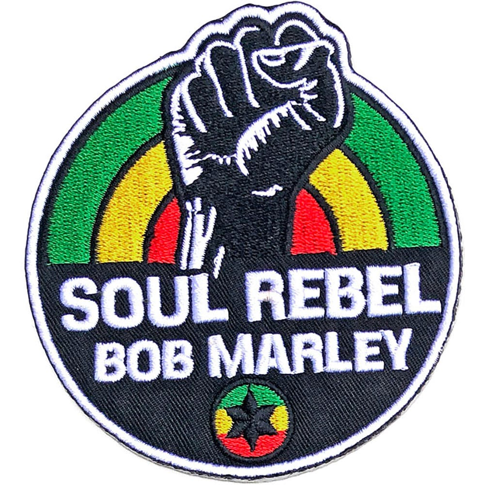
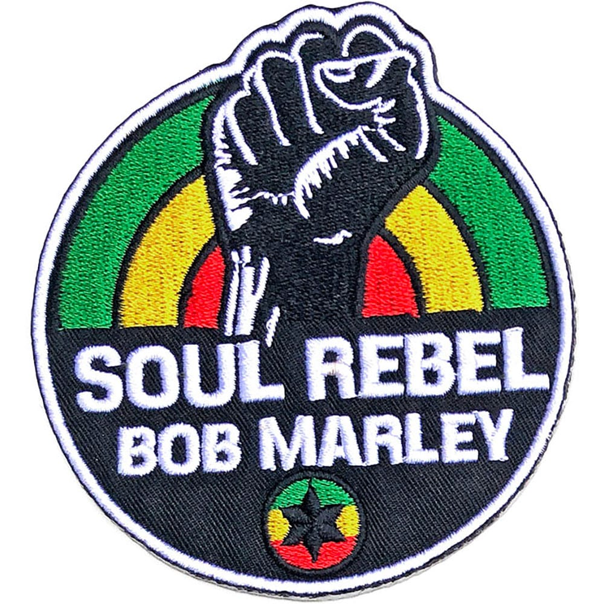

Catch A Fire
Released April 1963
Musicians:
- Bob Marley, Rhythm Guitar & Vocals
- Peter Tosh, Lead Guitar & Vocals
- The I-Threes, Backing vocals
Catch a Fire is the fifth studio album by the reggae band The Wailers (aka Bob Marley and the Wailers), released in April 1973. It was their first album released by Island Records. he band did not have enough money to return to Jamaica, so their road manager Brent Clarke approached producer Chris Blackwell, who agreed to advance The Wailers money for an album.
Side One
- Concrete Jungle
- Slave Driver
- 400 Years
- Stop That Train
- Baby We've Got a Date
Side Two
- Stir It Up
- Kinky Reggae
- No More Trouble
- Midnight Ravers
- Critics have called Catch a Fire one of the greatest reggae albums of all time.
- The album's supporting tour began in 1973 in the United Kingdom, and then moved to the United States. In England, they performed 19 shows at universities and clubs.
- Chris Blackwell, producer
- The album sold around 14,000 copies in its first weeks, and peaked at number 171 on the Billboard 200 chart and at number 51 on Billboard R&B chart.
 
